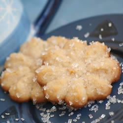

Butter Snow Flakes

Description
A wonderful Spritz cookie with cinnamon in it. These freeze very well. Original recipe made by Linda extracted from allrecipes.com
Ingredients
- 2¼ cups all-purpose flour
- ¼ teaspoon salt
- ¼ teaspoon ground cinnamon
- 1 cup butter
- 1 (3 ounce) package cream cheese, softened
- 1 cup white sugar
- 1 egg yolk
- 1 teaspoon vanilla extract
- 1 teaspoon orange zest
Steps
- Preheat oven to 350 degrees F (175 degrees C). Sift together the flour, salt, and cinnamon; set aside.
- In a medium bowl, cream together butter and cream cheese. Add sugar and egg yolk; beat until light and fluffy. Stir in the vanilla and orange zest. Gradually blend in the dry ingredients. Fill a cookie press or pastry bag with dough, and form cookies on an ungreased cookie sheet.
- Bake for 12 to 15 minutes in the preheated oven, or until the cookies are golden brown on the peaks and on the bottoms. Remove from cookie sheets at once to cool on wire racks.